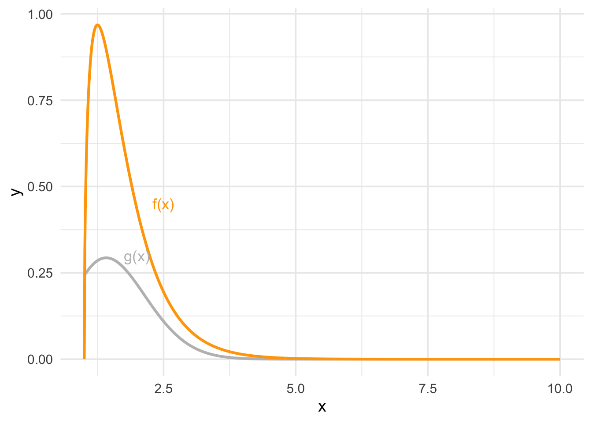

MATH-472: Homework 3
Question 1
Do 6.1, 6.3, 6.6, 6.9, 6.10 in the exercises of Chapter 6.
6.1
Analytically: \[ \int_0^{\frac{\pi}{3}} sin(t)\ dt = -cos(t) \Bigg|_{t = 0}^{t = \frac{\pi}{3}} = cos(0) - cos(\frac{\pi}{3}) = \frac{1}{2} \]
Monte-Carlo integration:
g <- function(t) sin(t)
u <- runif(10000, 0, pi/3)
pi/3 * mean(g(u))[1] 0.50004566.3
We will compare two estimates for \(\theta = \int_0^{\frac{1}{2}} e^{-x}\ dx\):
- \(\theta\), Simple Monte-Carlo
- \(\theta^*\), “Hit-and-Miss” method
m <- 10000
# simple Monte-Carlo integration
g <- function(x) exp(-x)
u <- runif(m, 0, 1/2)
theta <- 1/2 * mean(g(u))
var_theta <- var(g(u)) / m
# hit-or-miss
e <- rexp(m, 1)
I <- e <= 1/2
theta_star <- mean(I)
var_theta_star <- theta_star * (1 - theta_star) / m
c("Variance - Simple MC" = var_theta, "Variance - Hit or Miss" = var_theta_star) Variance - Simple MC Variance - Hit or Miss
1.283763e-06 2.394938e-05 Based on \(m = 10,000\), the we would say that \(\theta\) is a more efficient estimator than \(\theta^*\).
6.6
# empirical estimates of Cov(e^U, e^{1-U}) and Var(e^U + e^{1-U})
f <- function(x) exp(x)
u <- runif(500)
v <- 1 - u
cov_uv <- cov(f(u), f(v))
var_u_plus_v <- var(f(u)) + var(f(v)) + cov_uv6.9
The Rayleigh Density is \[ f(x) = \frac{x}{\sigma^2} e^{\frac{-x^2}{2\sigma^2}} \text{ where } x \geq 0, \sigma > 0. \]
Implement a function to generate samples from a \(Rayleigh(\sigma)\) distribution using antithetic variables. What is the percent reduction in variance of \(\frac{X + X'}{2}\) compared with \(\frac{X_1 + X_2}{2}\) for independent \(X_1\) and \(X_2\)?
rayleigh <- function(n, sigma, anti = TRUE) {
u <- runif(n / 2)
v <- if (anti) 1 - u else runif(n / 2)
u <- c(u, v)
sqrt(-2 * sigma^2 * log(u))
}
independent <- rayleigh(n = 3000, sigma = 2, anti = FALSE)
antithetic <- rayleigh(n = 3000, sigma = 2, anti = TRUE)
# f(x_1, x_2, ..., x_1500) ~ X_1
# f(x_1501, x_1502, ..., x_3000) ~ X_2
X1 <- independent[1:1500]
X2 <- independent[1501:3000]
# f(x_1, x_2, ..., x_1500) ~ X
# f(1 - x_1, 1 - x_2, ... 1 - x_1500) ~ X'
X <- antithetic[1:1500]
Xp <- antithetic[1501:3000]
# calculate variances
v1 <- 1/4 * var(X1) + 1/4 * var(X2) + 1/4 * 2 * cov(X1, X2)
v2 <- 1/4 * var(X) + 1/4 * var(Xp) + 1/4 * 2 * cov(X, Xp)
# percent reduction
p <- (v1 - v2) / v1The reduction in variance is estimated as 94.56%, based on \(\sigma = 2\) and \(n = 3,000\).
6.10
Use Monte Carlo integration with antithetic variables to estimate \[ \int_0^1 \frac{e^{-x}}{1 + x^2}\ dx, \] and find the approximate reduction in variance as a percentage of the variance without variance reduction.
f <- function(x) exp(-x) / (1 + x^2)
mc <- function(n, anti = TRUE) {
u <- runif(n / 2)
v <- if (anti) 1 - u else runif(n / 2)
u <- c(u, v)
mean(f(u))
}
n <- 3000
t1 <- t2 <- numeric(n)
for (i in 1:n) {
t1[i] <- mc(1000, anti = FALSE)
t2[i] <- mc(1000, anti = TRUE)
}
var_smc <- var(t1)
var_atv <- var(t2)
theta <- mean(t2)
p <- (var_smc - var_atv) / var_smcFrom our simulation with \(n = 3,000\), we have \(\hat{\theta} =\) 0.525. The estimated reduction in variance is 96.25%.
Question 2
Suppose you use the importance sampling method to obtain a Monte Carlo estimate of \[ \theta = \int_1^\infty g(x)\ dx, \] where \[ g(x) = \frac{x^2}{\sqrt{2 \pi}} e^{-x^2 / 2}. \]
A possible importance function for the purpose could be \[ f(x) = \frac{1}{\Gamma(3/2)} 2^{3/2} x^{3/2-1} e^{-2x}, 1 < x < \infty. \] Note that \(t = x - 1\) has a gamma distribution with shape 3/2 and rate 2. Draw two functions \(y = g(x)\) and \(y = f(x)\) on the xy-plane for the following values:
x <- seq(1, 10, 0.01).Estimate \(\theta\) using the importance function in (a).
g <- function(x) x^2 / sqrt(2 * pi) * exp(-x^2 / 2)
f <- function(x) 1 / gamma(3 / 2) * 2^(3/2) * (x - 1)^(3/2 - 1) * exp(-2 * (x - 1))
x <- seq(1, 10, 0.01)
d <- data.frame(x = x, y0 = g(x), y1 = f(x))
library(ggplot2)
theme_set(theme_minimal(base_size = 14))
ggplot(d, aes(x = x)) +
geom_line(aes(y = y0), size = 1.1, color = "grey") +
geom_line(aes(y = y1), size = 1.1, color = "orange") +
annotate("text", x = 2.0, y = 0.3, label = "g(x)", color = "grey", size = 4.5) +
annotate("text", x = 2.5, y = 0.45, label = "f(x)", color = "orange", size = 4.5) +
labs(x = "x", y = "y")
To estimate \(\theta\) using importance sampling, we use the following procedure.
- Generate \(x_1, x_2, \cdots, x_n \sim f_X(x)\)
- Estimate \(\hat{\theta}\) as \(\hat{\theta} = \frac{1}{n} \sum_{i = 1}^n \frac{g(x_i)}{f(x_i)}\).
x <- rgamma(10000, 3/2, 2) + 1
theta <- mean(g(x) / f(x))
theta[1] 0.3997343integrate(g, 1, Inf)0.400626 with absolute error < 5.7e-07